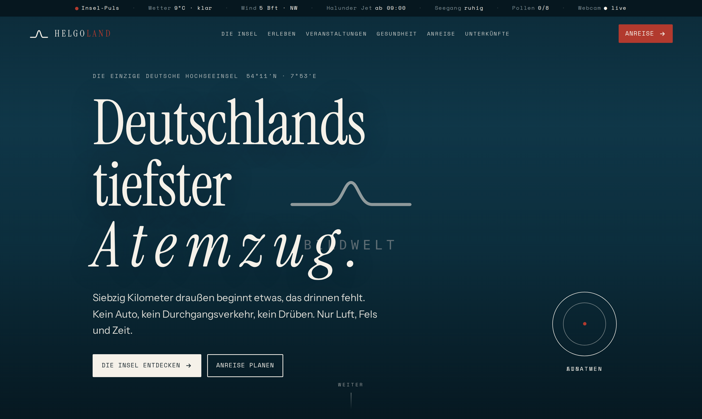
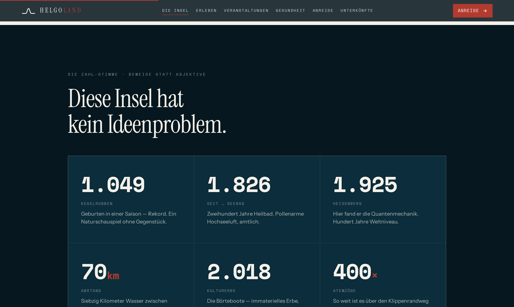
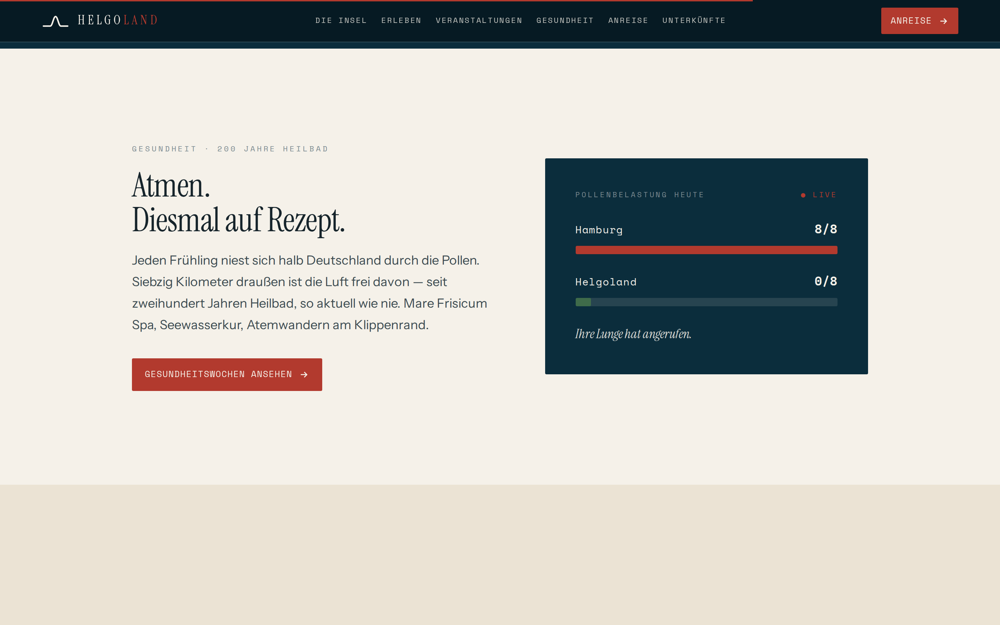
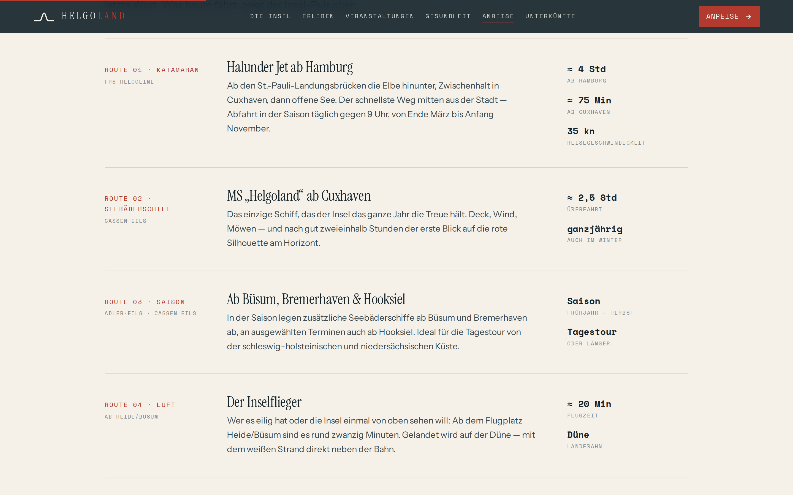
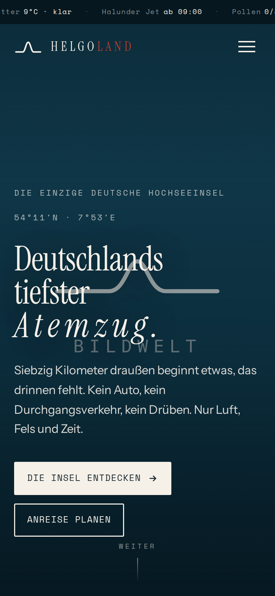
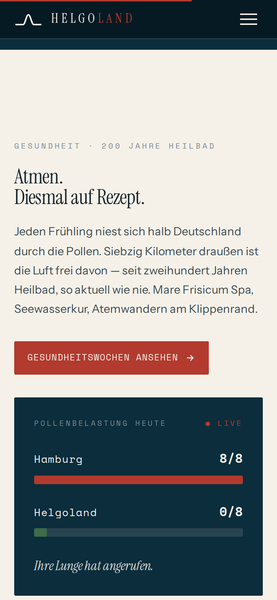
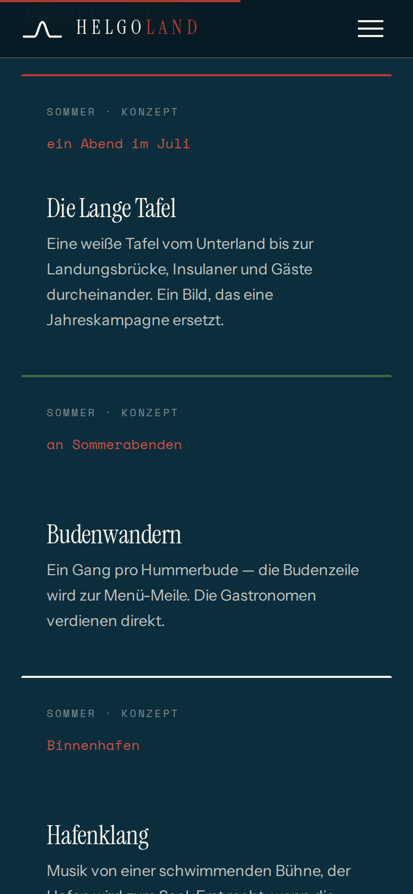

Die Richtlinien. Kurz genug, um sie zu lesen.
Klar genug, um sie zu halten.
ATMEN ist eine leise Marke in einer lauten Kategorie. Jede Gestaltungsentscheidung folgt daraus: viel Fläche, wenig Elemente, kurze Sätze, eine Welle. Wenn etwas weggelassen werden kann, wird es weggelassen. Dieses Dokument regelt das Wenige, das bleibt — verbindlich.
Drei Bausteine tragen alles: das Zeichen (die Atemlinie), die Farbe (Tiefsee mit Schaum) und die Schrift (drei Stimmen, drei Schnitte). Wer diese drei richtig einsetzt, kann nichts falsch machen.
Ein Atemzug als Linie: ruhig, symmetrisch, ein einziger Bogen. Die Atemlinie wird nie nachgezeichnet, nie „ähnlich“ gebaut — sie kommt immer als Datei aus dem Werkzeugkasten. Strichstärke, Rundung und Proportion sind Teil des Zeichens.

Der Freiraum um das Zeichen entspricht rundum der Höhe des Wellenbogens (im Lockup: der Abstand zwischen Linie und Wortmarke). In diesem Raum steht nichts — kein Text, kein Bildmotiv, keine Kante.
| Variante | Digital min. | Print min. | Wann |
|---|---|---|---|
| Lockup gestapelt | 90 px Breite | 24 mm | Cover, Plakat, Fahne, Textil — der Standard. |
| Lockup horizontal | 140 px Breite | 35 mm | Navigation, Briefkopf, schmale Banner. |
| Atemlinie solo | 32 px Breite | 8 mm | Unter 90 px, Stickerei, Prägung, Muster. |
| Wortmarke solo | — | — | Nie ohne Linie. Ausnahme: Fließtext („ATMEN“). |
| Favicon / App-Icon | 16 px / 1024 px | — | Immer nur die Linie auf Tiefsee-Kachel. |
Position: Auf Plakaten und Motiven steht das Zeichen unten links oder unten zentriert. Im Web oben links. Es schwebt nie mitten im Motiv, und es konkurriert nie mit einer Headline in gleicher Größe.
Die Palette ist klein und bleibt es. Tiefseeblau und Schaum machen die Marke; Sand rhythmisiert helle Strecken; Rot markiert — nie mehr als ein Akzent. CMYK-Werte sind unkalibrierte Richtwerte: vor Produktion immer Proof.
| Kombination | Kontrast | WCAG | Einsatz |
|---|---|---|---|
| Schaum auf Tiefsee | ≈ 12,5 : 1 | AAA ✓ | Standard für dunkle Flächen. |
| Tinte auf Schaum | ≈ 13,8 : 1 | AAA ✓ | Standard für helle Flächen. |
| Felsenrot auf Schaum | ≈ 5,1 : 1 | AA ✓ | Labels & Akzente auf hell. |
| Felsenrot hell auf Tiefsee | ≈ 3,3 : 1 | AA groß ✓ | Nur große Labels/Versalien auf dunkel. |
| Felsenrot auf Tiefsee | ≈ 2,4 : 1 | ✗ | Nur dekorativ — nie für Text. |
Verläufe gibt es nicht — mit einer Ausnahme: der Scrim hinter Bildern (Tiefsee dunkel, 30–90 % Deckung), damit Schrift auf Fotografie lesbar bleibt.
Instrument Serif ist die Seele — große Sätze, Zitate, die Wortmarke. Instrument Sans ist die Klarheit — Lauftext und Interface. Space Mono ist die Zahl — Labels, Fakten, Koordinaten, immer in Versalien mit Laufweite. Es gibt keine vierte Schrift, kein Bold-Serif, kein Kursiv-Mono.
| Rolle | Schnitt | Web | Regeln | |
|---|---|---|---|---|
| Display / H1 | Serif 400 | 56–96 px | 34 pt | LH 1.04 · LS −0.015em · nie fett |
| H2 / H3 | Serif 400 | 34 / 24 px | 25 / 14 pt | text-wrap balance |
| Lede / Zitat | Serif 400 kursiv | 22 px | 15 pt | max. 22–34ch |
| Fließtext | Sans 400 | 18 px min. 16 px | 10,5 pt min. 9 pt | LH 1.65 · 45–65 Zeichen/Zeile |
| UI / Betonung | Sans 500–600 | 14–18 px | — | 600 nur für Zwischentitel |
| Label / Eyebrow | Mono 400 | 12 px min. 11 px | 6,4–7,5 pt | VERSALIEN · LS 0.12–0.22em |
| Zahlen / KPI | Mono 700 | frei | frei | tabular-nums · Einheit in Rot |
Download: Alle drei Schriften liegen als WOFF2 im Werkzeugkasten (SIL Open Font License — frei auch kommerziell) und auf Google Fonts: Instrument Serif · Instrument Sans · Space Mono. Keine Ausrufezeichen, keine Superlative — die Stimme regelt das Kampagnenbuch.
Die verbindlichen Maße für alles Digitale — vom Logo in der Navigation bis zur Atem-Animation. Grundlage ist ein 8-px-Raster; Eckenradius ist grundsätzlich 2 px (Ausnahme: runde Elemente).
| Element | Maß | Spezifikation |
|---|---|---|
| Logo · Navigation | Linie 34 × 22 px | Horizontal-Lockup; Wortzug 18–19 px, LS 0.22em, Versalien. |
| Wortmarke · Hero | min. 40 px | Nur mit Atem-Animation oder statisch mit LS 0.14em. |
| Favicon | 16 / 32 / 512 px | Nur Atemlinie auf Tiefsee-Kachel (favicon.svg). |
| App- / Touch-Icon | 1024 px · rx 232 | Linie zentriert, Strich ≈ 3,2 % der Kantenlänge. |
| UI-Icons | 24-px-Raster | Strich 2 px, runde Kappen — wie die Atemlinie. |
| Button | Mono 12,5 px | LS 0.12em, Versalien, Padding 1.05em/1.5em, Radius 2 px. |
| Fokus-Ring | 2 px Felsenrot | outline-offset 3 px — Pflicht auf allen Interaktionen. |
| Progress / Linien | 1–2 px | Haarlinien in Linie-Token (14–16 % Deckung). |
| Raster & Container | 8 px · max. 1180 px | Seitenränder clamp(20–60 px). |
Das eine bewegte Element der Marke — Wortmarke oder Atem-Wörter „atmen“ über die Laufweite. Alles andere bewegt sich höchstens beim Eintritt (Fade, 1 s) oder gar nicht.
| Parameter | Wert | Anmerkung |
|---|---|---|
| Zyklus | 10 s | 4 s einatmen (0→40 %), 6 s ausatmen (40→100 %). |
| Laufweite | 0.10em → 0.42em | Mobil (< 560 px): max. 0.22em. |
| Deckkraft | 0.78 → 1.0 | Synchron zur Laufweite. |
| Layout-Schutz | width-lock | Breite im Maximalzustand reservieren — die Zeile darf nie umbrechen. |
| Reduced Motion | Pflicht | prefers-reduced-motion: Animation aus, statisch LS 0.14em. |
Nordisches Licht, gedeckte Farben, echte Momente — Wind, Nässe und Nebel sind Motive, keine Fehler. Keine HDR-Sättigung, keine gestellte Postkarten-Idylle, keine Drohnen-Akrobatik. Menschen erscheinen beiläufig, nie posierend.
Schrift auf Bild nur mit Scrim (Tiefsee dunkel, 30–90 %). KI-generierte Motive werden immer als solche gekennzeichnet. Das Zeichen auf Fotografie: nur in Schaum, nur mit Schutzraum.
Ein ZIP, drei Ordner. Die SVGs sind echte Vektorpfade (Wortmarke in Kurven — keine Font-Abhängigkeit), die PNGs sind produktionsfertige Exporte, die Schriften frei lizenziert (OFL). Wer gestaltet, nimmt Dateien von hier — und zeichnet nichts nach.
Werkzeugkasten laden (ZIP)| Anwendung | Datei |
|---|---|
| Plakat, Cover, Fahne, Textil groß | atmen-lockup-schaum.svg |
| Website-Navigation, Briefkopf | atmen-horizontal-*.svg |
| Stickerei, Prägung, sehr klein, Muster | atemlinie-*.svg |
| Browser-Tab, App | favicon.svg · app-icon.svg |
| Office / schnelle Platzierung | logo/png/… @2000 |
Die Website ist die Referenz-Anwendung der Marke. Diese Abbildungen (Bildflächen schematisch) sind verbindliche Muster für Hero, Zahlen-Band, Live-Module und Unterseiten.







Drei Kacheltypen tragen alle Kanäle: Motiv (Bildwelt + eine Zeile), Zahl (Mono 700 auf Tiefsee), Zitat (Serif kursiv auf Tiefsee dunkel). Der Feed wechselt im Dreier-Rhythmus — nie zwei gleiche Typen nebeneinander.
| Kanal / Format | Maß | Regel |
|---|---|---|
| Profilbild (alle) | 1000 × 1000 px | App-Icon-Motiv — rund beschnitten sicher. |
| Instagram Post / Story | 1080×1350 / 1080×1920 | Story-Safe-Zone: oben 220, unten 320 px. |
| LinkedIn Bild / Banner | 1200×627 / 1584×396 | Zahl-Stimme führt; max. 3 Hashtags, 0–1 Emoji. |
| Facebook Event-Header | 1920 × 1005 px | Events sind der Facebook-Kern. |
| Redaktion | 1 Post = 1 Gedanke | Live-Daten schlagen Content; Wetter wird nie versteckt; Kritik nie gelöscht. |
Die wichtigsten Baupläne — vollständig ausgeführt im 50-seitigen PDF-Manual.
| Anwendung | Kernmaße |
|---|---|
| Plakat / City-Light | Rand 9 % der Breite · Headline Serif = Breite/9, oben links · Zeichen unten links = Breite/5 · lesbar in 3 s aus 5 m. |
| Anzeigen | Gleiches Raster wie Plakat; unter 1/4-Format nur die Zahl-Kachel; Absenderzeile immer mit helgoland.de. |
| Briefbogen A4 | Logo horizontal 60 mm bei x 20 / y 16 mm · Satzspiegel 20/20/45 mm · Naturpapier 100–120 g. |
| Visitenkarte 85 × 55 | Vorderseite nur Zeichen auf Tiefsee · Rückseite Name Sans 600, Rest Mono. |
| Beschilderung | Stahlemaille, Tiefsee/Schaum · Aufbau: Linie → Ort (Sans 600) → Haarlinie → Distanz in Atemzügen (1 Atemzug ≈ 0,75 m) · keine Leuchtkästen. |
| Textil | Stick Atemlinie min. 60 mm, Brust links · Textilfarben nur Tiefsee/Schaum/Sand. |
| Fähre | Rumpfband Tiefsee = 1/6 Rumpfhöhe · Zeichen mittschiffs · Bug/Heck nur Linie. |
| 01 | Zeichen aus dem Werkzeugkasten — unverändert, richtige Farbfassung? | 02 | Schutzraum („ein Atem“) rundum frei? |
| 03 | Mindestgrößen eingehalten (24 mm / 90 px · Linie 8 mm / 32 px)? | 04 | Nur Systemfarben — Rot < 10 %, kein reines Weiß/Schwarz? |
| 05 | Fließtext in AAA-Kombination, min. 16 px / 9 pt? | 06 | Nur die drei Schriften, Serif nie fett? |
| 07 | Kein Ausrufezeichen, kein Superlativ, kein Inselvergleich? | 08 | Spricht der Text eine der drei Stimmen — mit Beweis? |
| 09 | Bildwelt gedeckt, Text nur mit Scrim, KI gekennzeichnet? | 10 | Der Weniger-Test: Kann ein Element weg? Dann muss es weg. |
Zwei Nein-Antworten = zurück an den Absender. Im Zweifel entscheidet die Markenführung — und im Zweifel entscheidet sie: weniger.
Was dieses Dokument nicht regelt, regelt die Haltung. Was die Haltung nicht regelt, gehört wahrscheinlich nicht in die Marke.